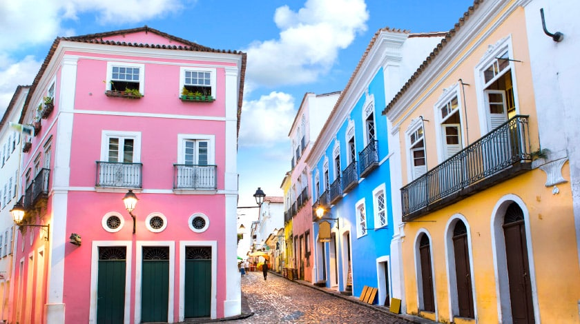
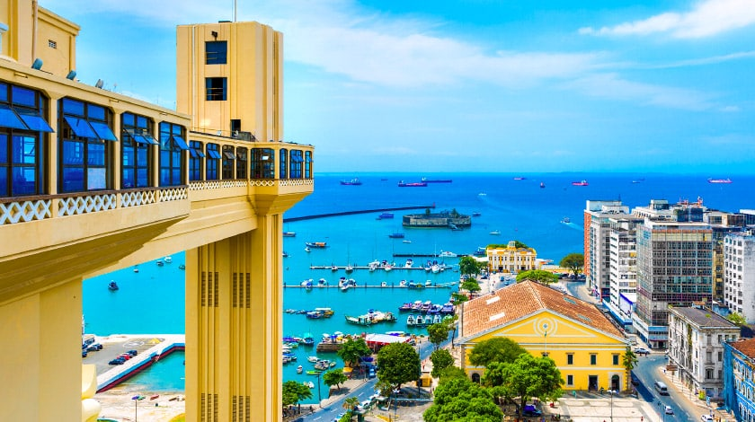
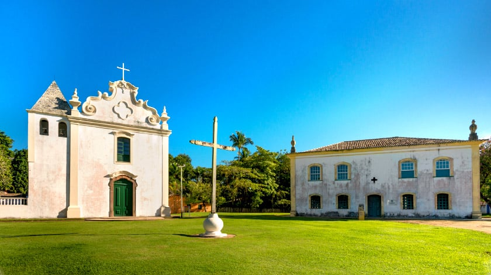
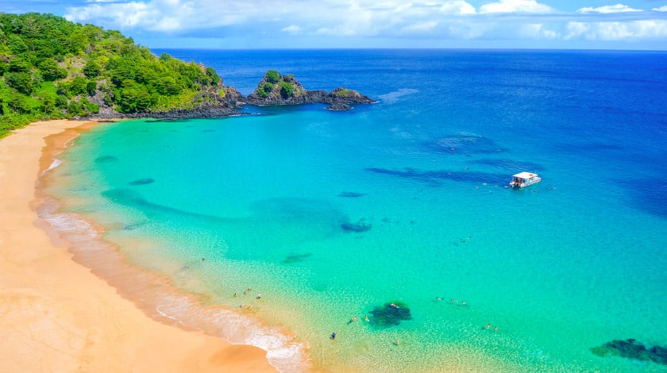
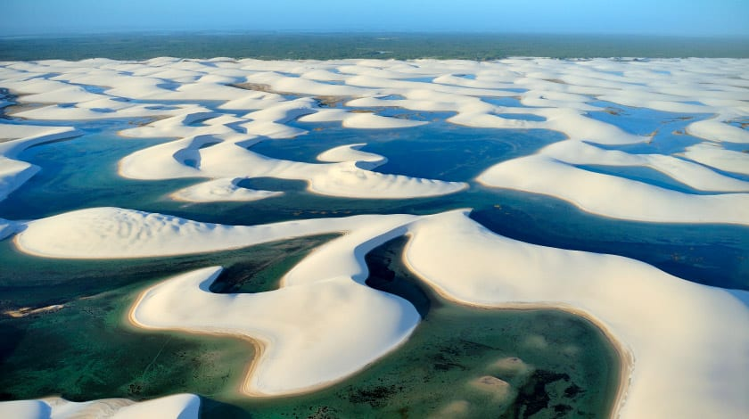

Pelourinho

O centro histórico de Salvador, na Bahia, é uma atração indispensável no roteiro
de quem visita a capital baiana. Suas ladeiras com calçamento pé de moleque são
palco para apresentações de grupos de música e capoeira, além de abrigar igrejas
históricas do século XVIII e casarões coloniais que funcionam como restaurantes,
bares, lojas de artesanato, museus e centros culturais.
Elevador Lacerda

Cartão-postal de Salvador, o monumento é a maneira mais original de passear
pelas cidades alta e baixa na capital baiana. Inaugurado em 1873, com 72 m
de altura o elevador liga a Praça Tomé de Souza com a Cairu, onde está o
Mercado Modelo. Do alto das duas torres da construção é possível observar a
Baía de Todos-os-Santos e, mais ao fundo, o Forte de São Marcelo. A viagem
pelo espaço dura cerca de 30 segundos, sendo transportadas até 20 mil pessoas por dia.
Centro Histórico de Porto Seguro

O município de Porto Seguro, no Sul da Bahia, possui atrações variadas, mas uma
em especial desperta a curiosidade dos visitantes: o turismo histórico e cultural!
Instalado no topo de falésias sobre a orla, o centro abriga prédios considerados
importantes na origem do Brasil, como o Marco do Descobrimento, trazido de Portugal
por Gonçalo Coelho em 1503. Tombado como Patrimônio Histórico Nacional pelo IPHAN
desde 1973, o lugar é realmente único. Graças às construções que preservam fachadas,
peças e objetos dos séculos XVI e XVII, o turista sente como se tivesse voltado ao passado.
Piscinas naturais de Porto de Galinhas
Porto de Galinhas, a praia mais famosa do litoral de Pernambuco é um dos
imperdíveis pontos turísticos do Brasil. Suas areias são bem movimentadas
e não faltam opções de barracas com bebidas e comidinhas, mas a atração
principal mesmo fica a cerca de 200 m da costa. Em meio às águas cristalinas
e esverdeadas, barreiras de recifes e corais formam piscinas naturais cheias
de peixinhos coloridos. Para maravilhar-se é preciso subir a bordo de uma
das jangadas tradicionais na região.
Baía do Sancho

Situada no fascinante arquipélago pernambucano de Fernando de Noronha, a
Praia do Sancho é a queridinha do destino e encanta pelas águas cristalinas
e bancos de coral. Além disso, é considerada um dos melhores pontos para
prática de mergulho livre no Brasil. No local há o mirante com vista para
toda a orla, onde é possível se deslumbrar com o mar e as falésias cobertas
por vegetação que formam as paisagens do litoral brasileiro. Com longa faixa
de areia, o acesso até a baía é feito de buggy, caminhonete ou barco.
Lençóis Maranhenses

Em Barreirinhas, a cerca de 270 km da capital do Maranhão, São Luís, um cenário
mágico encanta viajantes do mundo todo. Os Lençóis Maranhenses, um dos principais
pontos turísticos do Brasil para quem viaja ao Maranhão, apresentam paisagens
incríveis, compostas por quilômetros de dunas de areia com até 40 metros de altura.
Ao caminhar pela areia fofa, formando pegadas, o viajante pensa estar em pleno deserto.
Mas quando chega ao topo de uma duna e se depara com uma lagoa de águas cristalinas,
percebe que o lugar é, na verdade, um oásis. Pode até parecer miragem, mas o deserto
do Brasil é o único no mundo com milhares de lagoas e piscinas naturais formadas pelas
águas da chuva.